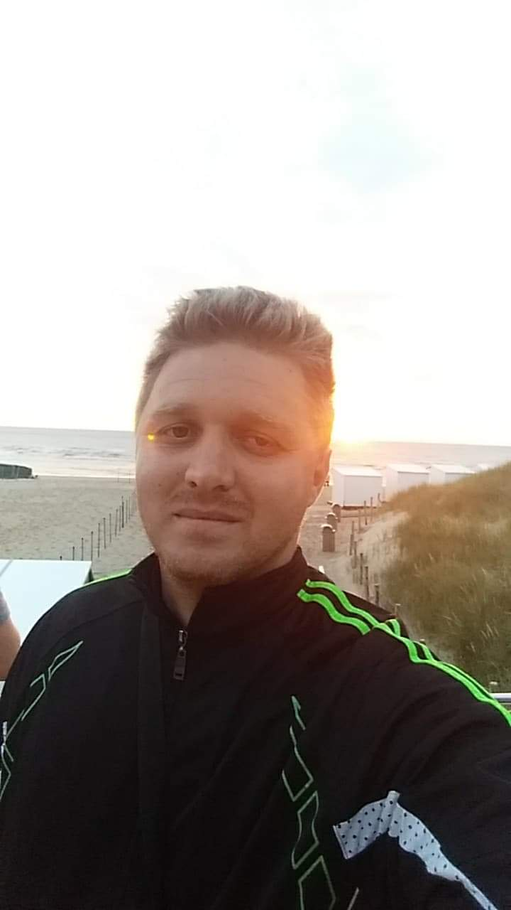

Moje ime je Mirnes Begović

Ukratko o meni
Školovao sam se i odrastao u Tuzli, nakon što me posao vodio od Sarajeva pa sve do Bruges-a ponovo sam se
vratio u Tuzlu i trenutno zivim tu.
Developer sam koji trenutno nema veliko iskustvo u developingu, ali sam neko ko je nakupio jako puno iskustva
u drugim branšama i mislim da je to moja prednost u odnosu na druge developere, kako bi i vama olakšao i pomogao da
razvijete svoju web-stranicu ili web-shop.
Obrazovanje
- Maj 2016
- Stručni ispit
FMERI, Mostar (Bosna i Hercegovina)
- Septembar 2007 - Septembar 2014
- Bachelor Inzenjer Geologije
Rudarsko-geološko-građevinski fakultet, Univerzitet u Tuzli, Tuzla (Bosna i Hercegovina)
- Septembar 2003- Juni 2007
- Geološki tehničar
Srednja Rudarsko-geološka škola, Tuzla (Bosna i Hercegovina)
Radno iskustvo
- July 2018 - Februar 2022
- Arst Konstrukcije doo Maribor, Slovenija
Radnik u proizvodnji, vodja tima u proizvodnji prenapregnutih elemenata, lokacija rada Bruges Belgija
-Organizavija smjena i pracenje plana
-Organizovanje smjestaja i prevoza
-Organizovanje prevoza za odlaske kuci tokom kratkih i kolektivnih odmora
- Februar 2018 - Maj 2018
- GEA doo Tuzla
Geolog saradnik
-Praćenje eksploatacije na površinskim kopovima
-Izrada geološke karte
-Vođenje evidencije i izrada knjiga o rezervama čvrtih mineralnih sirovina
-Praćenje eksploatacije na temalnim vodozahvatima
-In-situ analiza termalne vode
-Izrada knjige o rezervama mineralne sirovine
- Decembar 2016 - Februar 2018
- Winner Project doo Sarajevo
Geolog projektant
-organizovanje i vođenje radilišta
-inženjerskogeološko kartiranje terena
-litološko kartiranje bušotine, in-situ opiti i uzorkovanje
-laboratorijska obrada uzoraka, analiza i interpretacija podataka
- Septembar 2016 - Novembar 2016
- GEA doo Tuzla
Geolog saradnik
-Praćenje eksploatacije na površinskim kopovima
-Izrada geološke karte
-vođenje evidencije i izrada knjige o rezervama čvrstih mineralnih sirovina
-Praćenje eksploatacije na temalnim
-In-situ analiza termalne vode
-Izrada knjige o rezervama mineralne sirovine
- Novembar 2014 - Novembar 2015
- E&P doo Zavidovići
Geolog pripravnik (volonter) -kartiranje površinskog kopa
-kontrola kvaliteta mineralne sirovine
-izrada i ažuriranje geološke karte
-ažuriranje i izrada knjige rezervi čvrstih mineralnih sirovina